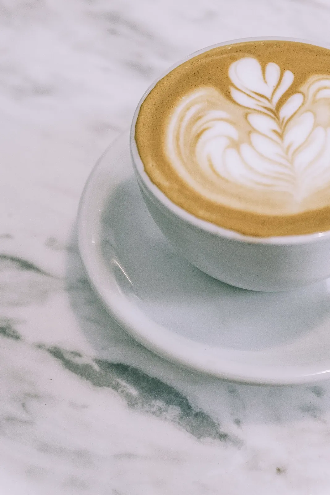
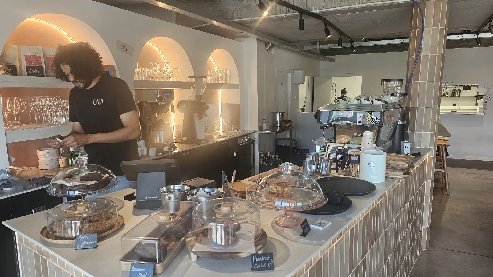
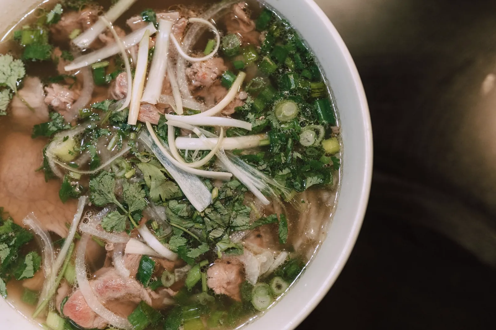
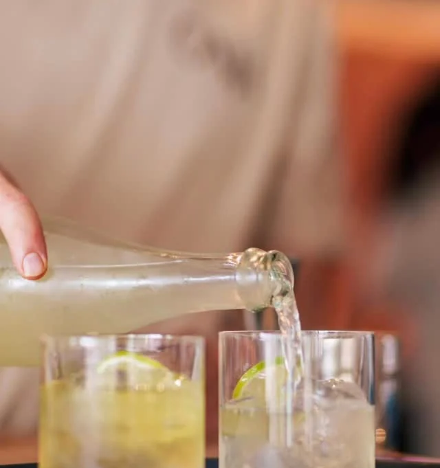
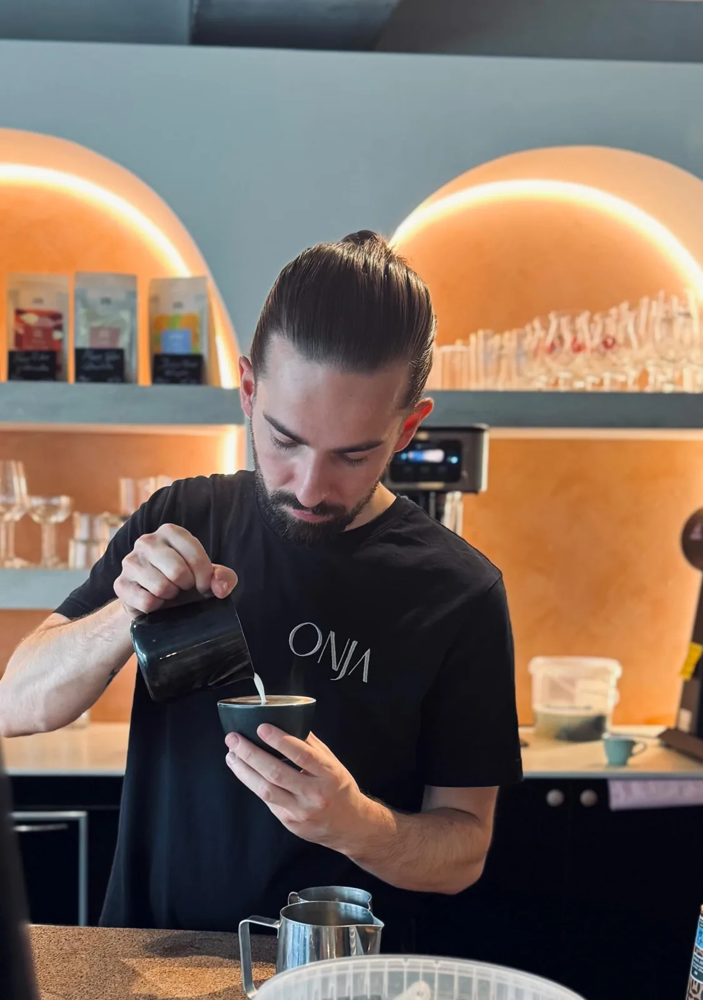
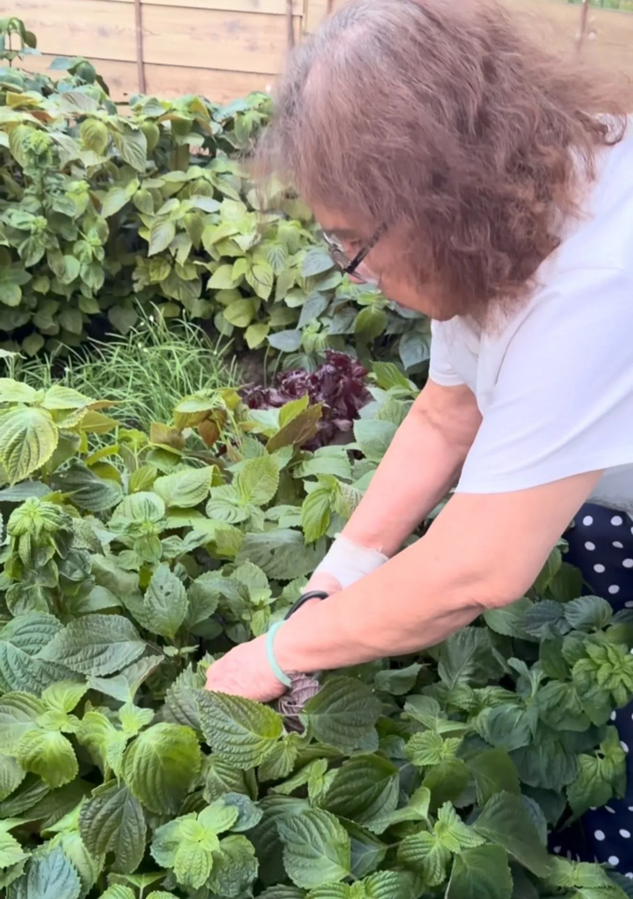

Koffie
Specialty coffee, van espresso tot flat white. Elke kop zetten we met aandacht voor textuur, timing en smaak.
Hele dagBij ONJA in Kortrijk drink je koffie waar we zelf voor uit bed komen, met ontbijt, lunch en iets zoets van de toog erbij.

OpenDi tot za, 9u tot 17u30
KeukenOntbijt en lunch tot 14u
ReserverenNiet nodig, loop gewoon binnen
Kom je voor een snelle espresso of blijf je hangen voor de lunch? Allebei goed. Dit vind je bij ons aan de toog.

Specialty coffee, van espresso tot flat white. Elke kop zetten we met aandacht voor textuur, timing en smaak.
Hele dag
Met een Aziatische twist. Geregeld staat er een Vietnamese klassieker op de kaart, zoals pho bo of bun bo.
Wisselende specials
Kombucha van Vira uit Marke, met één vaste smaak en één die met de seizoenen wisselt. Op de toog: appelcrumble, banana bread en hazelnootcookies.
Sinds dag één
Jeroen is mede-eigenaar en head barista van ONJA. Jarenlang werkte hij als sommelier in de fine dining, tot koffie hem helemaal te pakken kreeg. Dezelfde aandacht voor smaak en detail vind je nu in elke kop die over onze toog gaat.
Latte art is meer dan een tekening in je koffie.Het draait om textuur, timing en controle. Op Instagram laat Jeroen zien hoe.
Sommige kruiden komen niet van de groothandel, maar uit de tuin van Bà Ngoại. Ze is een van de OG's van ONJA en leert ons nog altijd elke dag bij. Verse perilla, of shiso zoals je het misschien kent, plukt ze er gewoon zelf.

Reserveren kan niet en hoeft ook niet. Zoek een plekje, bestel aan de toog en blijf zo lang je wil. Zin in een uitgebreid ontbijt? Dan ben je welkom vanaf negen uur.
Diksmuidekaai 2, 8500 Kortrijk
Bekijk op Google Maps
Ik maakte deze demo voor jullie om te tonen wat er kan. Na een kort gesprek maak ik er iets veel persoonlijkers van, helemaal naar jullie wens.
Vrijblijvend. Ik kom langs of we bellen.
Op maat, op jullie eigen domein.
Geen voorschot. Jullie betalen pas als alles klaar is.
Hosting, domeinnaam en kleine wijzigingen, zoals nieuwe openingsuren.
Omdat een voorbeeld meer zegt dan een mail. Zo zien jullie meteen wat er kan, en het kost jullie niets.
Nee. Het gesprek is vrijblijvend. Vinden jullie het niks, dan is het daarmee gedaan.
Na ons gesprek staat jullie site binnen 10 tot 14 dagen online.
Zeker. Jullie domeinnaam kan gewoon blijven, de nieuwe site komt in de plaats van de oude.
Nee, dat doe ik op basis van ons gesprek. Eigen foto's zijn mooi meegenomen, maar niet nodig om te starten.